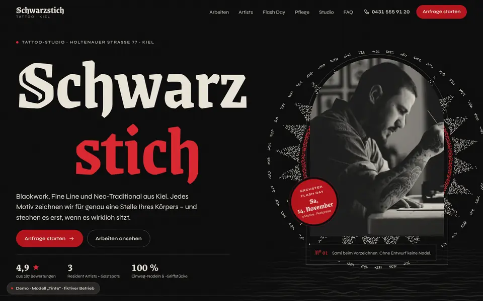
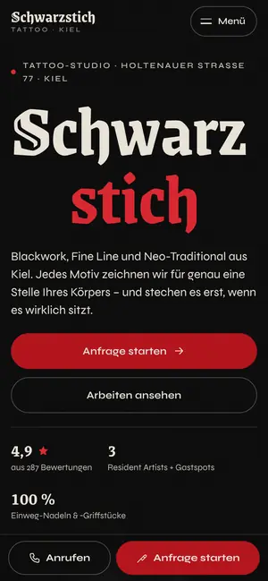

Case Study 21 / 30 · Beauty
Schwarzstich Tattoo
Modell „Tinte“
Blackwork-Studio in Schwarz und Knochen mit Tinten-Reveals, Portfolio-Filter und Körper-Silhouette.


Ausgangslage
Schwarzstich ist ein erfundenes Tattoo-Studio in Kiel für Blackwork, Fine Line, Neo-Traditional und Dotwork. Wer ein Tattoo plant, will Arbeiten je Artist und Stil sehen, abschätzen, wie groß das Motiv wird und wie lange die Sitzung dauert, und danach wissen, wie die Pflege läuft. Die Seite soll diese Vorarbeit abnehmen und die Anfrage strukturieren.
Idee
Schwarz, Knochenweiß, ein einziges Rot und Rauchgrau; Grenze Gotisch als Display-Schrift, Syne als Text. Redaktionelle Fotos sind als Duoton umgefärbt, Portfolio-Bilder bleiben in Graustufen, bis die Farbe beim Hover hineinzieht. Tinte ist die Bewegungsmetapher: Überschriften und Bilder erscheinen über Tintenmasken, als würde sie ins Papier ziehen.
Was die Seite kann
- Tinten-RevealÜberschriften und Bilder erscheinen über Sprite-Masken mit 24 Frames; im Portfolio zieht die Farbe beim Hover per Tintenmaske ins Schwarz-Weiß-Bild, auf Touch-Geräten beim Erreichen der Bildschirmmitte.
- PortfolioFilter nach Artist und Stil mit FLIP-Animation, Lightbox mit Pfeiltasten und Escape, „Ähnliches anfragen“ füllt Stil und Artist im Assistenten vor.
- Anfrage-AssistentKörper-Silhouette vorne und hinten als SVG mit Tastatursteuerung, Größenregler mit maßstäblicher Vorschau, grobe Sitzungsdauer, Stil, Artist, Idee und Kontakt mit Zusammenfassung.
- Flash-Day-BogenNeun eigene SVG-Motive, Reservierung im Dialog mit Uhrzeit, Stempel-Animation und Zähler freier Motive im Browserfenster.
- Pflege-ZeitleisteTag für Tag, ab 900 px als gepinnte horizontale Strecke mit Tageszähler; ein Regler „Tage seit dem Stechen“ markiert die passende Phase.
- Hero mit Dotwork-Mandala auf Canvas, Stile-Liste mit Vorschaubild am Cursor und eigene SVG-Karte mit Öffnungsstatus.
Dein Betrieb
So eine Seite für dich?
Schreib mir kurz, was du anbietest und was deine Website leisten soll. Du bekommst eine ehrliche Einschätzung, was sie kostet und was sie dir bringen kann.
Projekt anfragen